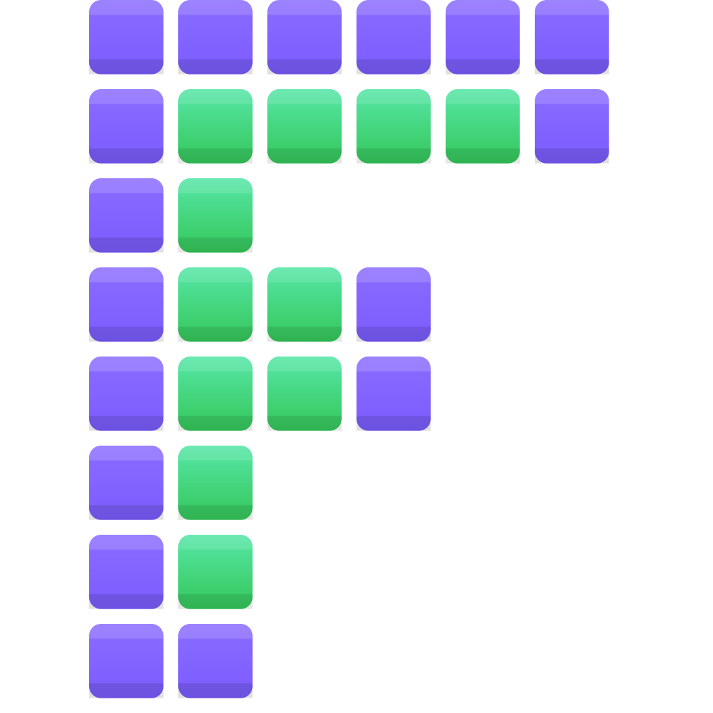
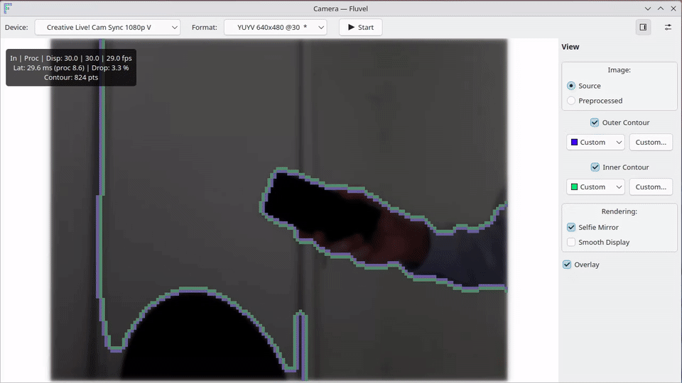
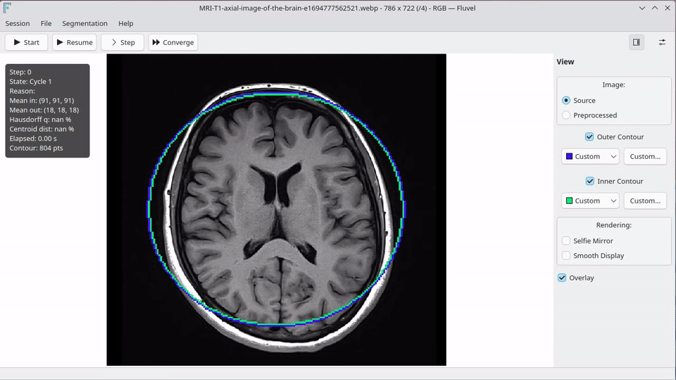

Fluvel Set
Real-time image segmentation and active contour experimentation platform
Modern C++ framework for active contour algorithms, real-time visualization and reproducible experimentation.
Demo#
Real-time tracking#

MRI contour evolution#

🚀 Downloads#
Latest builds and packages for all supported platforms:
📚 Documentation#
The online documentation is generated automatically from the source code and follows the latest development version.
Documentation is versioned and tied to specific commits for reproducibility and long-term experimentation.
✨ Features#
Region-based active contour evolution
Real-time image processing
Video stream support
Modular architecture for feature extensions
Qt-based visualization interface
Reproducible builds (CMake, Flatpak, AppImage)
🧠 Overview#
Fluvel Set is a research-oriented image segmentation platform focused on region-based active contour methods.
The project emphasizes:
Modern C++ architecture
Real-time experimentation
Separation between processing engine and UI
Reusable image processing components
Reproducible scientific workflows
The processing core does not depend on Qt. Qt is used only for visualization and interaction.
🏗️ Architecture#
The project is organized into:
fluvel-set/
├── src/ # Source code
│ ├── app/ # Desktop/mobile Qt application
│ │ ├── ui/ # Windows and reusable UI components
│ │ ├── qml/ # Experimental UI layer
│ │ ├── core/ # Application logic and orchestration
│ │ └── interop/ # Application integration and adapters
│ │
│ ├── bindings/ # Language and scripting integrations
│ │ └── python/ # Python bindings (pybind11)
│ │
│ └── image_processing/ # Image processing library
│ ├── filtering/ # Filtering, denoising and preprocessing
│ ├── segmentation/ # Active contours and segmentation models
│ ├── analysis/ # Shape analysis and image metrics
│ └── core/ # Shared processing infrastructure
│
├── examples/ # Python examples demonstrating Fluvel IP features
│ ├── filtering/ # Image filtering examples and experiments
│ ├── hausdorff/ # Shape comparison and Hausdorff distance examples
│ ├── segmentation/ # Active contour segmentation examples
│ ├── workflow/ # Complete processing pipeline examples
│ ├── resources/ # Shared datasets and images used by examples
│ └── utils.py # Shared utilities used across examples
│
├── resources/ # Icons and application assets
├── translations/ # Application translations (.ts, .qm)
│
├── scripts/ # Development, packaging and utility scripts
│ # Includes local testing and maintenance helpers
│
├── docs/ # Documentation configuration and assets
├── web/ # Project homepage and download portal
│
├── cmake/ # Shared CMake modules and configuration
├── packaging/ # Flatpak, AppImage and distribution files
│
├── .github/ # CI workflows, releases and automation
│
└── CMakeLists.txt # Main build configuration
Main modules#
fluvel_app — Qt desktop application (user interface and orchestration)
fluvel_ip — Image processing and segmentation library (C++)
fluvel_bindings — Python bindings for Fluvel IP (pybind11/C++)
Fluvel follows a hybrid architecture:
Technical organization for application layers (UI, integration and execution flow)
Functional organization for image processing modules (filtering, segmentation and analysis)
Build, release and deployment automation are intentionally kept outside the source tree and are handled through repository workflows and helper scripts.
Some components (such as additional UI technologies and language integrations) are experimental and may evolve over time.
🛠️ Build#
Requirements#
Core library#
CMake ≥ 3.22
C++23 compiler (tested with Clang, GCC and MSVC)
Desktop application#
Additional dependencies:
Qt6 (Core, Gui, Widgets, Multimedia, MultimediaWidgets, Svg, LinguistTools), tested with Qt 6.9 and 6.11
Optional:
FFmpeg development libraries (
libavformat,libavcodec,libavutil,libswscale) to enable video recording and export. Off by default; enable it with-DFLUVEL_ENABLE_FFMPEG=ON. FFmpeg is found with pkg-config on Linux and macOS, and through Conan on Windows.
Python bindings#
Additional dependencies:
Python ≥ 3.10
pybind11
NumPy
Optional (examples only):
OpenCV
Build desktop application#
cmake -S . -B build \
-DFLUVEL_BUILD_APP=ON \
-DFLUVEL_BUILD_BIND=OFF
cmake --build build
./build/src/app/fluvel
Build Python bindings#
cmake -S . -B build \
-DFLUVEL_BUILD_APP=OFF \
-DFLUVEL_BUILD_BIND=ON
cmake --build build
Generated module:
build/python/fluvel.*
Install runtime dependencies for examples:
pip install numpy opencv-python
Example:
python examples/filtering/showcase.py
Build everything#
cmake -S . -B build \
-DFLUVEL_BUILD_APP=ON \
-DFLUVEL_BUILD_BIND=ON
cmake --build build
Linux packages#
Flatpak (recommended): runs on any distribution that supports Flatpak.
AppImage: built on Ubuntu 25.10 so that the FFmpeg headers match the FFmpeg version used by Qt. Because AppImages rely on the host’s glibc and C++ standard library, it requires a recent distribution (roughly the versions released since late 2025). On older systems, use the Flatpak.
📜 License#
Fluvel is licensed under the CeCILL 2.1 license (CEA · CNRS · INRIA).
CeCILL is a French free software license compatible with the GNU GPL, widely used in research and academic software.
Documentation
- Qt Application
- Image Processing Library
- Image Filtering
- Segmentation
- Shape Analysis
- Image Processing Core
fluvel_ipImageFormatchannelCount()formatFromChannelCount()fluvel_ip::ImageViewfluvel_ip::ImageOwnerconvertRgbFToBgr32()Point2D_iPoint2D_ffluvel_ip::Point2DstdPointSetfluvel_ip::mathRgb_ucRgb_64iRgb_fColor_3iscaleAndRound()fluvel_ip::Bgra32fluvel_ip::Components_3ifluvel_ip::Lab_ffluvel_ip::Luv_ffluvel_ip::Rgbfluvel_ip::Xyz_ffluvel_ip::colorfullyInside8()kNeighbors4kNeighbors4Diagfluvel_ip::Vec2ifluvel_ip::ElapsedTimer
- Python Bindings